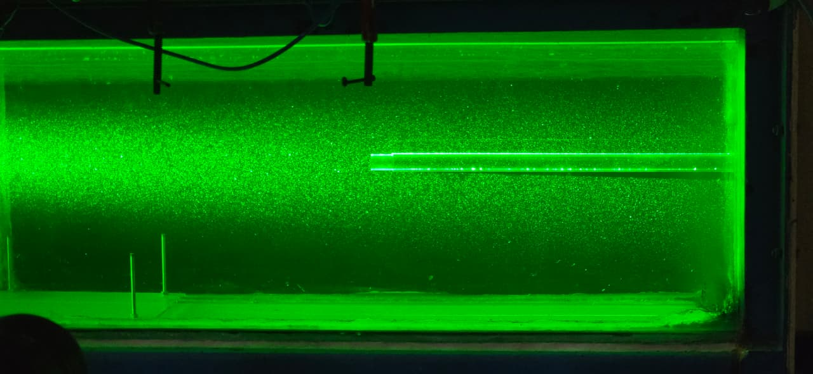

Research internship · Indian Institute of Science, 2025

Completed during a one-month research internship at the Indian Institute of Science (IISc), Bangalore, under Prof. Dr. Raghuraman N. Govardhan (Department of Mechanical Engineering), alongside co-intern Amogh Adhikari. Vortex rings are the same flow structure found in starting jets, volcanic eruptions, and the propulsive pulses of jellyfish and squid. This project used Particle Image Velocimetry (PIV) to generate and quantify vortex rings in a water channel, as technical support for a broader study on jellyfish-inspired propulsion.
A vortex ring forms when a piston pushes a column of fluid through a nozzle — the boundary layer separates at the exit and rolls up into a ring. How much fluid a single pulse can pack into that ring is governed by the formation number, a non-dimensional stroke ratio (L/D) that Gharib et al. showed sits between 3.6–4.5 across a wide range of conditions. Beyond that point, any additional fluid trails off as a separate jet instead of joining the ring — directly linking the formation number to the propulsive efficiency of a pulsed jet.
The processed PIV data clearly visualized a vortex street wake: paired streamlines converging on two counter-rotating vortex cores, one clockwise and one counter-clockwise, consistent with the dipole structure expected from an oscillating source.
Assisted in the PIV setup for the jellyfish-inspired propulsion study, and processed the resulting flow-field data in PIVlab to quantify vortex shedding and thrust-relevant characteristics — worked under the mentorship of Mr. Ashok Balla on the PIV methodology itself.
Full internship report Read →